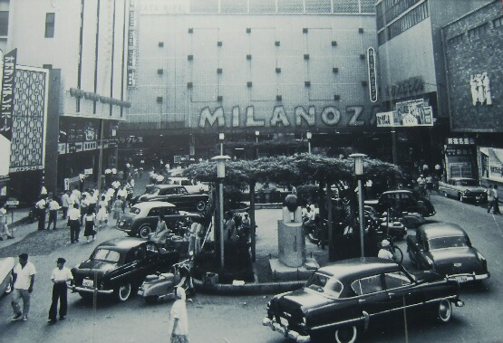

History
歌
舞
伎
町
Kabukichō
Kabukichō
is an entertainment and red-light district in Shinjuku, Tokyo, Japan. Kabuki-chō is the location of many host and hostess clubs, love hotels, shops, restaurants, and nightclubs, and is often called the "Sleepless Town" (眠らない街).
Originally, the area was known as Tsunohazu (角筈) and was a swamp. After the Meiji Period, the area became a duck sanctuary. As the Yodobashi Purification Plant was built in 1893, the ponds were filled in. In 1920, a girls' school was built there, and the surroundings were developed into a residential area. Prior to World War II, the district was one of the areas open to foreign-born property owners (primarily from Taiwan and Korea), who mainly operated tsurekomi yado, predecessors to today's love hotels.

By 1999, the area had been named "Asia's largest adult entertainment district", and tabloids were regularly running candid photographs of drunken Kabukichō patrons fighting and being arrested. However, starting in 2003, joint citizen and police patrols began enforcing business licensing, and the 1948 Businesses Affecting Public Morals Regulation Act was more strictly enforced as well starting in April 2004, forcing adult-themed businesses to start removing customers at midnight in preparation to close by 1 AM. Kabukichō leaders attributed the change in enforcement to Tokyo Governor Shintaro Ishihara and the Tokyo bid for the 2016 Summer Olympics.